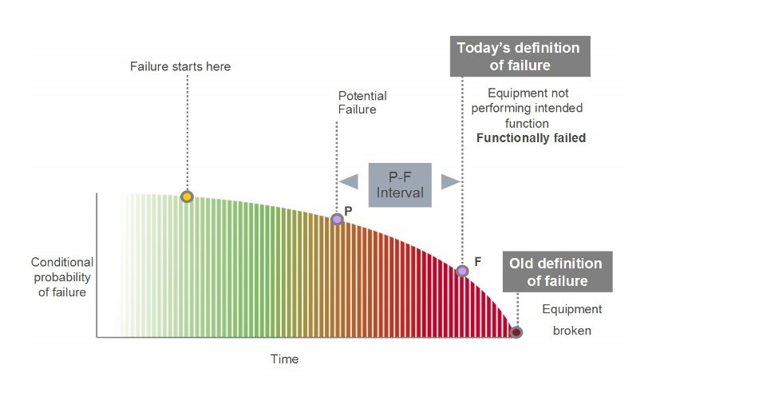
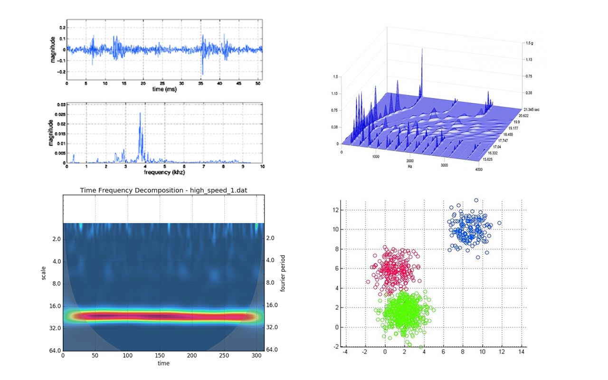
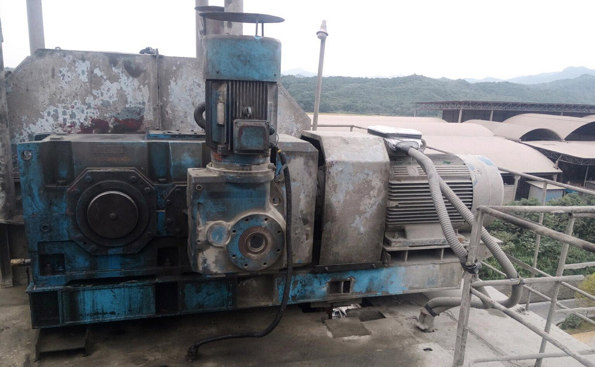
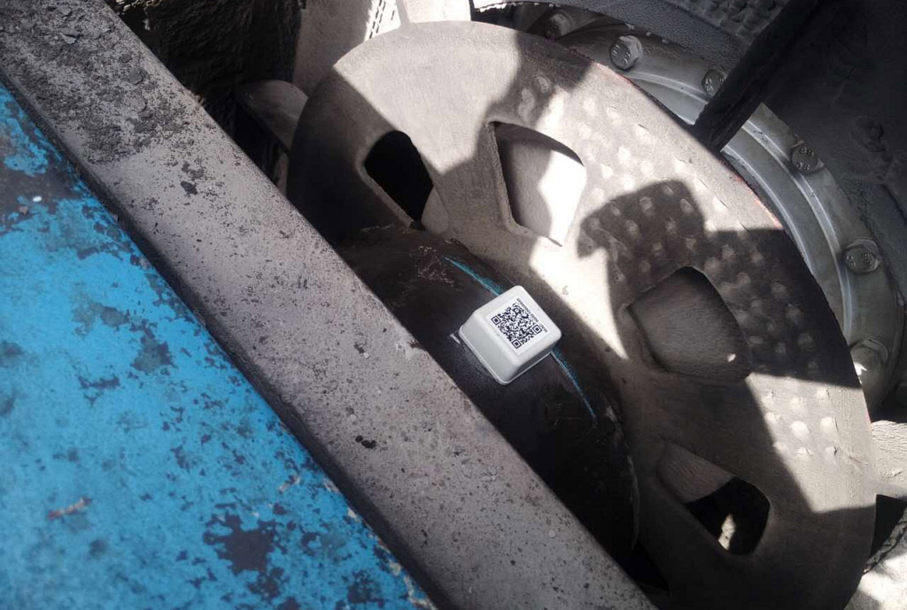
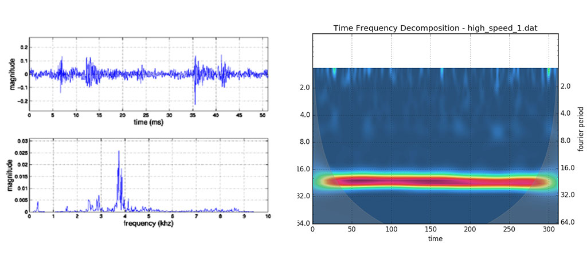

“振动”，解读机器的健康密码
“如果要延长机器寿命，就要及时排解不好的状态！” —— Andrew, CEO
预测性维护
几乎不存在一个不经历任何过程，就直接发生故障的情况。在故障的早期，就可以监测到异常信号。
我们利用机器本身的振动，监测其工作状态，发现异常信号，及时通告预警。
（图中，黄点为故障的源头，P-F为早期信号。）
健康度监测
过去我们对机器的状态只懂得“正常”或“故障”，因此只能猜测会不会发生故障，或者事后维修。
现在可以把机器从稳定期到故障期的过程进行定量分析，赋以“健康度”指标，通过人工手段干预劣化过程，在接近故障期之前就予以排解，从而规避故障。

定位冲击能量
造成机器故障的原因很多，比如不平衡、不对中、不润滑，由于旋转机器的固有特性，大部分问题都会反映到冲击能量的异常，由此引发振动。
我们能够找到冲击能量的源头：

高维度监测
无线传感器阵列（WiiMine Arrays）被安装在机器运动的关键区域，如轴承、齿轮箱、驱动轴、转子等， 它可以采集振动、温湿度等状态数据。
每一个传感器就是一个维度的数据，维度越高，就越接近机器真实的状态。

算法与人工智能
通过多种算法提取故障特征，利用人工智能技术动态学习新故障特征，自主对未知故障进行模式匹配，辅助人们进行决策，大幅提高设备维护的自动化程度。

| 参数 | 内容 |
|---|---|
| 监测对象 | 风机、泵、减速机等 旋转型运作的机械 |
| 评估指标 | 冲击能量、健康度 |
| 传输距离 | BLE: 0.5-15m; 433MHz: 30-1000m |
| 最大节点数 | 65535 |
| 续航时间 | 1年以上（典型值） |
| 天线规格 | 2.4GHz, 433MHz |
| 工作温度 | -20°C-+90°C |
| 安全加密 | AES 128bit |
| 安装方式 | 螺栓固定、粘贴固定 |
| 数据上传 | 每小时一次（典型值） |
| 采样率 | 5KHz（最高） |
| 温度测量 | ± 0.5 °C, 15 to +60 °C |
| 湿度测量 | ± 4.5% rH, 20 to +80% rH |
| 加速度测量 | ±16g重力加速度 |
| 加速度计类型 | 三轴MEMS |
| 加速度计频响 | 1KHz |
| 多节点同步采样 | 支持 |
| 特征类型 | 时域、频域 |
| Data Logger | 发现异常时，开启精细采样和存储 |
| 小波变换 | 支持 |
| 报警阈值 | 自适应 |
| 消息推送 | 微信（首选）、邮件、短信 |

减速机机组

WiiMine传感单元

WiiMine传感单元

WiiMine传感单元

WiiGate/WiiCarrier（工控盒）

微信客户端报警

变换域分析